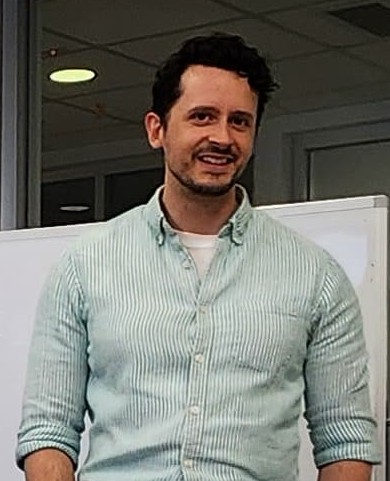

About
Biography
I am a postdoctoral researcher at the University of Pennsylvania, working with René Vidal.
I received bachelor’s degrees in physics and mathematics from the University of Wollongong in 2015, for which I was awarded First Class Honours and the University Medal.
I received my PhD in pure mathematics from the University of Wollongong in 2019, supervised by Adam Rennie, for which I was awarded the Best Thesis Award in the Faculty of Engineering and Information Sciences. My thesis concerned characteristic classes of foliated manifolds in noncommutative geometry.
After postdoctoral appointments in pure mathematics, I moved into machine learning in 2021. My research draws on differential geometry, topology and dynamical systems to study the geometry of architectures and learning dynamics. I also maintain an interest in geometry for its own sake.
I spend my spare time philosophising.

Academic appointments
University of Pennsylvania
Postdoctoral researcher, Innovation in Data Engineering and Science.
Johns Hopkins University
Postdoctoral researcher, Mathematical Institute for Data Science.
University of Adelaide
Postdoctoral researcher, Australian Institute for Machine Learning.
University of Adelaide
Postdoctoral researcher, School of Mathematical Sciences.
Australian National University
Postdoctoral researcher in pure mathematics.
Acknowledgements
I am grateful to the mentors and collaborators who have supported my research: Adam Rennie at Wollongong; Alan Carey at the Australian National University; Mathai Varghese and Simon Lucey at Adelaide; and René Vidal at Johns Hopkins and Penn.
CV and contact
For a current CV or to discuss research, please contact me by email.